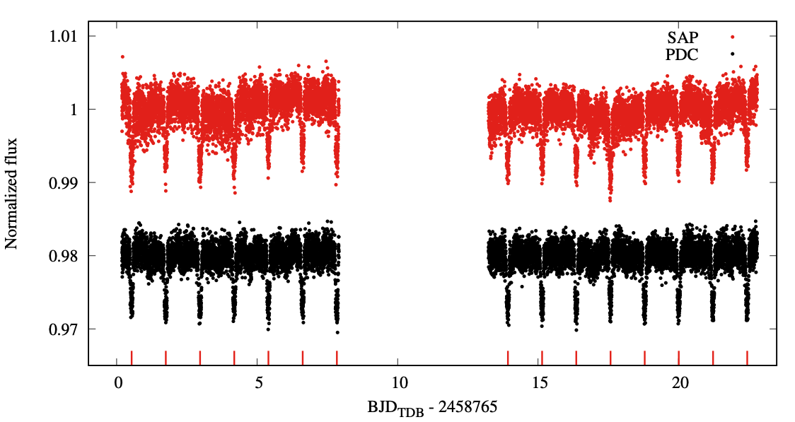
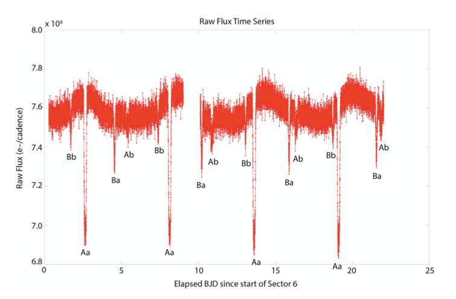

STATUS UPDATE: We have now started observing in Sector 26!
Hello TESS followers and welcome to this week's news bulletin! This week we present three papers using TESS data, on the archive.
TESS unveils the optical phase curve of KELT-1b. Thermal emission and ellipsoidal variation from the brown dwarf companion, and activity from the star (Essen et al., 2020): The authors analyze data obtained by TESS for KELT-1b, a low mass (27 MJup) brown dwarf. The TESS light curve of the host star shows clear ellipsoidal variations due to the high mass and close proximity of its companion. Using TESS data the authors determine the most accurate secondary eclipse depth to date of KELT-1b, 304 ± 75 parts-per-million (ppm). The amplitude of the phase curve is also measured and given as 128 ± 27 ppm, and a day and night brightness temperature of 3201 ± 147 K and 1484 ± 110 K, respectively, obtained.
TIC 278956474: Two close binaries in one young quadruple system, identified by TESS (Rowden et al., 2020): The authors of this paper have identified a quadruple system with two close eclipsing binaries using TESS data. The two binaries have observable primary and secondary eclipses. For one of the eclipsing binary systems the period is 5.488 days and the smaller star is full occluded by the larger in the secondary eclipse. In the other binary system the period is 5.674 days and both eclipses are grazing. Combining the TESS observations with spectroscopy and speckle photometry the masses and radii of the four stars are obtained.
Asteroseismic masses of four evolved planet-hosting stars using SONG and TESS: resolving the retired A-star mass controversy (Malla et al., 2020): Four evolved planet-hosting stars are presented in this paper with the aim of resolving some of the issues regarding planet occurrence as a function of stellar mass in the red giant regime. Using asteroseismology, these four stars are examined in addition to previous results such that a self-consistent study is performed. The seismic masses of the full set of 16 stars are compared with spectroscopic masses from the literature. The authors find an offset between the two mass scales that is mass-dependent and indicates that a previously claimed overestimation of spectroscopic masses only affects stars more massive than 1.6 M⊙.

Fig 1: Taken from Essen et al., (2020). De-trended TESS flux of KELT-1. The red data points are the SAP photometry, the black PDC. The light currves have gone through internal data preparation by the authors. There are 15 transits which were analyzed in the paper and are indicated by the red lines on the bottom of the plot.

Fig 2: Taken from Rowden et al., (2020). The TESS Simple aperture photometry light curve for Sector 6 which has been annotated to indicate the various eclipses.